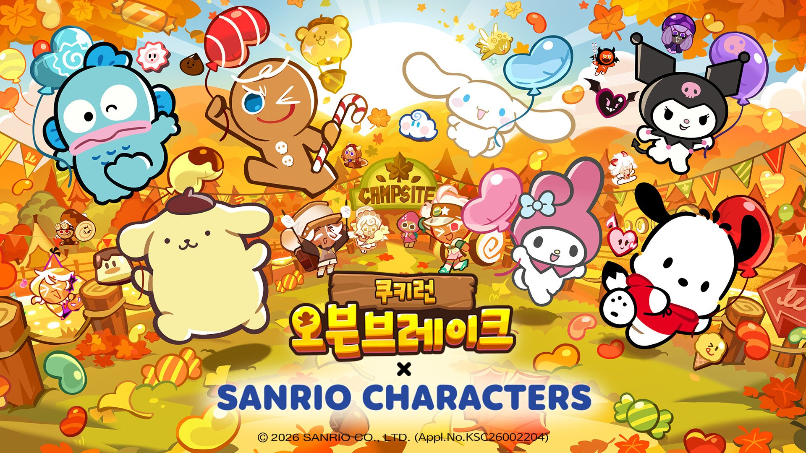

쿠키런 오븐브레이크 산리오캐릭터즈 콜라보 쿠키 얻는법, 도토리메달로 짝꿍펫까지 모으는 법
9월 23일부터 쿠키런: 오븐브레이크에 산리오캐릭터즈 콜라보가 열렸는데요, 마이멜로디며 쿠로미며 어릴 적부터 익숙한 얼굴들이 쿠키로 변신했다는 소식에 저도 업데이트되자마자 얼른 들어가보고 싶어지더라고요. 산리오캐릭터즈가 쿠키런 스타일로 나온다니 반가우시죠? 그런데 막상 들어가 보니 신규 쿠키·짝꿍펫을 그냥 플레이만 한다고 모을 수 있는 구조가 아니더군요. '도토리메달'이라는 콜라보 전용 재화를 따로 챙겨서 바꿔야 하는 방식이거든요. 그래서 오늘은 보도자료·공식 패치노트 기준으로, 이번 산리오캐릭터즈 콜라보에서 신규 쿠키 6종과 짝꿍펫을 실제로 어떤 경로로 얻을 수 있는지 하나씩 정리해볼게요.
지금까지 공개된 보도자료·앱스토어 패치노트에는 이번 산리오캐릭터즈 콜라보 전용 쿠폰 코드 안내가 따로 없었어요(공식 카페 공지까지는 확인하지 못했어요). 신규 쿠키·짝꿍펫은 전부 플레이로 모으는 도토리메달 방식이니, 참고해두시면 좋을 것 같아요.

쿠키런: 오븐브레이크 × 산리오캐릭터즈 콜라보 공식 키비주얼이에요.
이미지 출처: 인벤 ⓒ데브시스터즈 · ⓒ2026 SANRIO CO., LTD. · 네이버 본문엔 받아서 재업로드 권장
쿠키런 오븐브레이크 산리오 콜라보 기간부터 짚어볼게요
쿠키런 오븐브레이크 산리오 콜라보는 2026년 9월 23일(수)부터 10월 26일(월)까지 진행됩니다.
오늘(10월 1일) 기준으로는 아직 콜라보 중반 전이라, 지금 시작해도 챙길 시간은 충분해요. 일정을 한눈에 보기 쉽게 정리하면 아래와 같습니다.
- 콜라보 시작 — 2026년 9월 23일(수)
- 콜라보 종료 — 2026년 10월 26일(월)
- 기준 업데이트 — 앱스토어 버전 14.301(9월 22일 적용)
신규 쿠키 6종, 마이멜로디부터 한교동까지 뭐가 나왔나
이번 콜라보로 쿠키런 오븐브레이크에 새로 추가된 쿠키는 마이멜로디, 쿠로미, 시나모롤, 폼폼푸린, 포차코, 한교동까지 총 6종이에요.
다들 산리오캐릭터즈 중에서도 인지도가 높은 라인업이라 그런지, 저도 도감에 하나씩 채워 넣는 재미가 쏠쏠할 것 같아요. 쿠키 6종에는 각각 전용 짝꿍펫도 함께 추가됐는데요, 다만 어떤 쿠키에 어떤 펫이 짝지어지는지 개별 매칭 이름까지는 아직 뉴스나 공식 보도자료 어디에서도 명확히 밝히지 않았습니다.
확인 위치: 인게임 펫 보관함·편성 화면에서 직접 확인 · 확인되면 아래에 채워주세요.
도감에서 신규 쿠키 6종을 한 번에 캡처해두면 라인업을 한눈에 보여주기 좋아요.
쿠키런 오븐브레이크 도토리메달은 어떻게 모으나요
도토리메달은 이번 산리오캐릭터즈 콜라보에서만 쓰는 전용 재화로, '산리오캐릭터즈 떼탈출'에서 쿠키와 짝꿍 펫을 함께 조합해 달리면 얻을 수 있어요.
떼탈출은 산리오캐릭터즈 쿠키들을 조합해서 함께 이어달리는 집중 콘텐츠인데요, 게임톡 보도에 따르면 캐릭터와 짝꿍 펫 조합에 따라 '프렌즈 파워업' 효과가 발동하는 구조라고 해요. 공식 패치노트 기준으로 매주 특별한 파워업이 준비돼 있다고 해요. 저도 처음엔 그냥 달리기만 하면 되는 줄 알았는데, 조합을 맞춰야 파워업이 터진다는 걸 알고 나니 '조합'이 왜 강조되는지 이해가 가더라고요.
도토리메달은 매주 일요일 오전 8시 정산으로 떼탈출 성과에 따라 지급되고, 여기에 더해 '산리오캐릭터즈! 매일매일 피버데이'에서도 도토리메달을 포함한 각종 재화가 쏟아진다고 경향게임스가 전했어요. 다만 한 번 정산될 때 정확히 몇 개가 들어오는지는 공식 패치노트와 뉴스 어디에도 구체적인 수치가 나와 있지 않습니다.
확인 위치: 인게임 '산리오캐릭터즈 떼탈출' 결과창·주간 정산 알림에서 직접 확인 · 확인되면 아래에 채워주세요.
조합이 맞아떨어지는 순간 프렌즈 파워업 연출이 터지는데, 이때 도토리메달이 쌓여요.
모은 도토리메달, 콜라보 상점에서 뭘 바꿀 수 있나
콜라보 상점에서는 도토리메달로 산리오캐릭터즈 신규 쿠키·짝꿍펫·전용 스킨을 모두 교환할 수 있어요.
경향게임스·마일드경제·게임톡·데일리안 등 다수 매체가 데브시스터즈 보도자료를 인용해 상점 교환 품목을 쿠키·펫·스킨으로 동일하게 명시하고 있어요. 공식 앱스토어 버전 기록 원문은 "도토리메달을 모아 산리오캐릭터즈와 콜라보 스킨들까지 획득해 보세요"라고 스킨 쪽만 짧게 요약했는데, 이건 패치노트 특유의 축약일 뿐 보도자료가 밝힌 전체 품목과 어긋나는 건 아니었습니다. 다만 각 품목을 바꾸는 데 메달이 몇 개나 필요한지는 공식 자료 어디에도 숫자가 없어요.
확인 위치: 인게임 '콜라보 상점' 화면에서 직접 확인 · 확인되면 아래에 채워주세요.
상점 목록을 직접 캡처해두면 교환 비용을 한눈에 비교하기 좋아요.
신규·복귀 유저도 쉽게 따라잡는 프렌즈 레벨 시스템
'프렌즈 레벨'은 보유한 산리오캐릭터즈 쿠키 중 레벨이 가장 높은 3개를 대표로 자동 등록해, 그중 가장 낮은 레벨을 기준으로 책정하는 시스템이에요.
이렇게 책정된 프렌즈 레벨을 기준으로 주요 이벤트 모드에서는 나머지 캐릭터 레벨까지 동등하게 끌어올려 주기 때문에, 오래 쉬다 돌아온 복귀 유저나 이번에 처음 시작하는 신규 유저라도 성장 부담 없이 떼탈출 같은 콘텐츠에 바로 뛰어들 수 있습니다. 산리오캐릭터즈 쿠키를 처음 키우는 유저도 레벨 격차 걱정 없이 바로 조합을 맞춰볼 수 있도록 진입 장벽을 낮춘 구조예요.
프렌즈 레벨이 책정된 화면을 캡처해두면 레벨 격차가 어떻게 보정되는지 보여주기 좋아요.
가을 캠핑부터 숨바꼭질까지, 콜라보 기간 추가 콘텐츠 모아보기
이번 콜라보 기간에는 '산리오캐릭터즈와 가을 캠핑!'을 비롯해 쿠키의 도전, 숨바꼭질, 낙엽 모아모아, 매일매일 피버데이까지 다양한 추가 콘텐츠가 함께 열렸어요.
공식 패치노트 기준으로 '가을 캠핑!'은 스테이지를 달려 재료를 모아 텐트를 완성하는 방식으로 안내돼 있는데요, 콘텐츠별로 하나씩 짚어보면 이렇습니다.
- 산리오캐릭터즈와 가을 캠핑! — 스테이지를 달려 재료를 모으고 텐트를 완성
- 쿠키의 도전 — 쿠키별 테마 맵을 달려 도전 목표 달성
- 산리오캐릭터즈와 숨바꼭질! — 돋보기 아이템으로 수풀에 숨은 쿠키·펫 찾기
- 산리오캐릭터즈! 낙엽을 모아모아 — 낙엽을 모아 즐기는 미니게임
- 산리오캐릭터즈! 매일매일 피버데이 — 도토리메달 포함 각종 재화가 쏟아지는 콘텐츠
여기에 더해 산리오캐릭터즈 전용 슈퍼에픽 스킨 6종과 기존 쿠키들의 레어 스킨 6종도 함께 출시됐으니, 놓치지 말고 챙겨보세요.
텐트가 완성되는 모습을 캡처해두면 진행 상황을 한눈에 보여주기 좋아요.
자주 묻는 질문
Q. 신규 쿠키 6종은 가챠 뽑기로도 얻을 수 있나요?
이번 콜라보 공지에서는 별도 가챠 배너에 대한 언급이 없었어요. 쿠키런 오븐브레이크가 평소에도 신규 쿠키를 뽑기 배너로 여는 경우가 있었던 만큼 가능성 자체는 열려 있지만, 이번 산리오캐릭터즈 콜라보에 한해서는 확인된 바가 없습니다.
Q. 산리오캐릭터즈 콜라보에 참여하려면 계정 레벨 같은 최소 조건이 있나요?
지금까지 공개된 보도자료·앱스토어 패치노트에서는 별도의 참여 조건이 안내되지 않았어요. 프렌즈 레벨 시스템이 레벨 격차는 완화해 주지만, 콘텐츠 입장에 필요한 최소 계정 레벨이나 진행도는 따로 명시되지 않았습니다.
Q. 콜라보가 끝나면 모아둔 도토리메달은 어떻게 되나요?
종료 후 소멸되는지 다음 콜라보로 이월되는지는 지금까지 공개된 보도자료·앱스토어 패치노트에서 따로 안내된 내용이 없어요. 보통 이런 기간 한정 재화는 종료와 함께 정리되는 경우가 많으니, 10월 26일 전에 미리 다 쓰는 쪽을 추천드려요.
Q. '산리오캐릭터즈와 가을 캠핑!'은 정확히 어떤 방식으로 진행되나요?
공식 패치노트는 스테이지를 달려 재료를 모아 텐트를 완성하는 흐름으로 설명하는데요, 일부 매체는 캐릭터별 미니게임을 깨고 캠핑존을 꾸미는 단계가 더해진다고도 전하고 있어서 세부 단계는 직접 플레이해 보면 금방 알 수 있을 것 같아요.
Q. '쿠키의 도전', '숨바꼭질', '매일매일 피버데이'는 구체적으로 어떤 콘텐츠인가요?
경향게임스가 전한 내용을 정리하면, '쿠키의 도전'에서는 쿠키별로 마련된 테마 맵을 달리면서 정해진 목표를 깨는 식으로 진행돼요. 숨바꼭질 콘텐츠는 돋보기 아이템을 손에 들고 수풀 곳곳에 숨어 있는 쿠키·펫을 찾아내는 방식이고, 피버데이는 매일 도토리메달을 비롯한 각종 보상이 풀리는 콘텐츠라고 보시면 돼요. 셋 다 콜라보 기간에만 열리는 한정 콘텐츠입니다.
쿠키런 오븐브레이크 산리오 콜라보 정리
| 항목 | 내용 |
|---|---|
| 콜라보 기간 | 2026.09.23(수) ~ 10.26(월) |
| 신규 쿠키 | 마이멜로디·쿠로미·시나모롤·폼폼푸린·포차코·한교동(6종) |
| 전용 재화 | 도토리메달 — 떼탈출 조합(쿠키+짝꿍펫) + 매일매일 피버데이 + 주간 정산(매주 일요일 오전 8시)으로 획득 |
| 교환처 | 콜라보 상점 — 쿠키·짝꿍펫·스킨 모두 교환 가능(품목별 교환 비용은 확인 필요) |
따져보면 이번 콜라보는 그냥 신작 쿠키를 뽑는 게 아니라, 떼탈출로 메달을 모으고 상점에서 바꾸는 흐름 자체를 익혀야 제대로 즐길 수 있는 구조였어요. 아직 종료까지는 시간이 넉넉하게 남아 있으니, 저처럼 이제 막 시작하신 분들도 느긋하게 쿠키·짝꿍펫 챙겨보시면 좋겠어요.
참고한 곳
· 쿠키런: 오븐브레이크 공식 앱스토어 버전 기록
· 경향게임스
· 게임톡